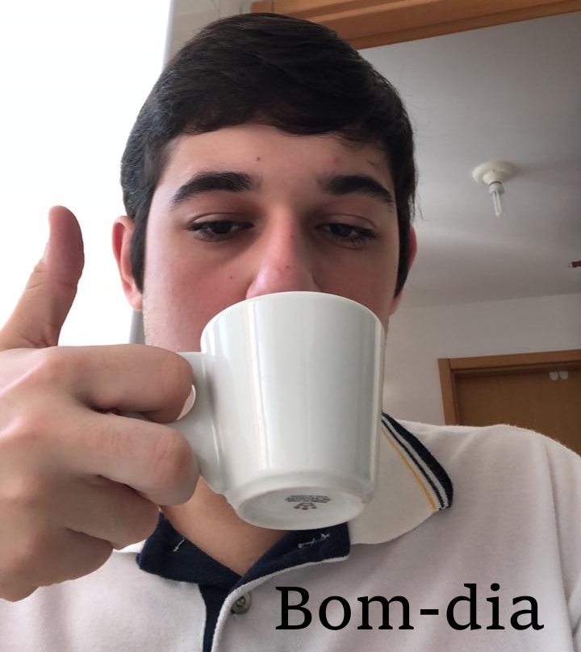

Nada aqui, amigo
Sobre
Quem Sou Eu?
Sou de Recife e nasci em 20/06/2002 e vivo aqui desde então. Fiz meu Ensino Infantil na Escola Primeiro Passo e meu Ensino Fundamental e Médio no Colégio Santa Maria. Durante o Ensino Médio passei 2 anos estudando em turma preparatória para o vestibular do ITA, onde aprendi bastante e pude alcançar a aprovação em Ciência da Computação na UFPE no início de 2020, logo após ter me formado
Sou um cara introvertido, gosto de ficar em casa e interagir pela internet, mas sempre gosto de sair com meus amigos. No meu tempo livre costumo jogar jogos de estratégia ou assisitir anime (mais informações em Arquivos). Também gosto bastante de História, principalmente história bélica.
